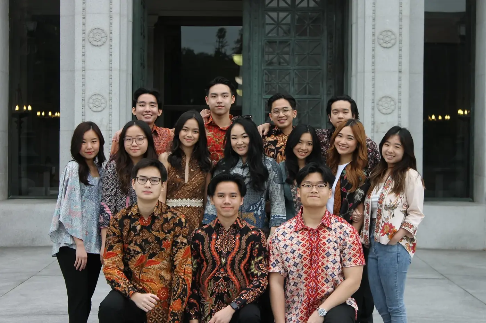
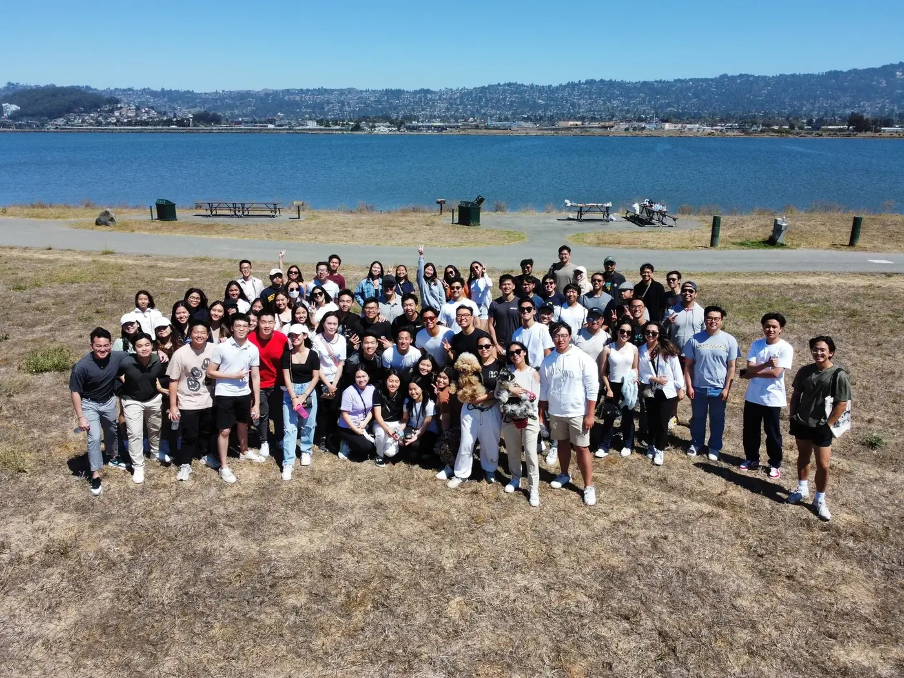
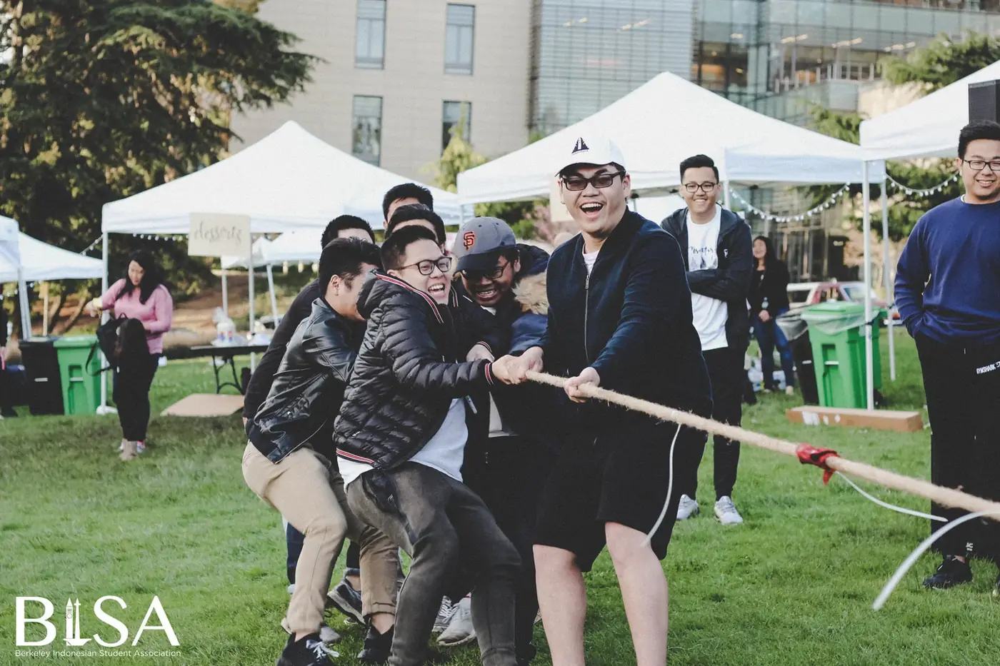
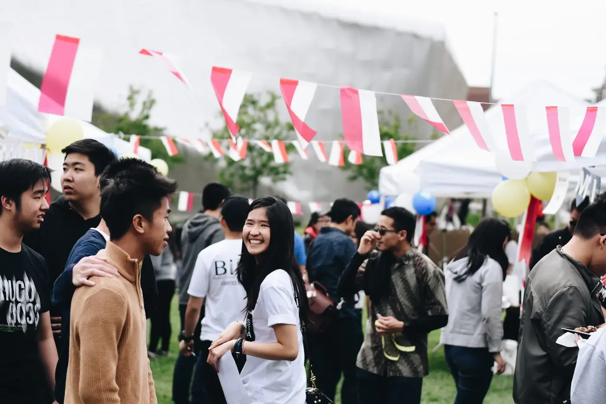
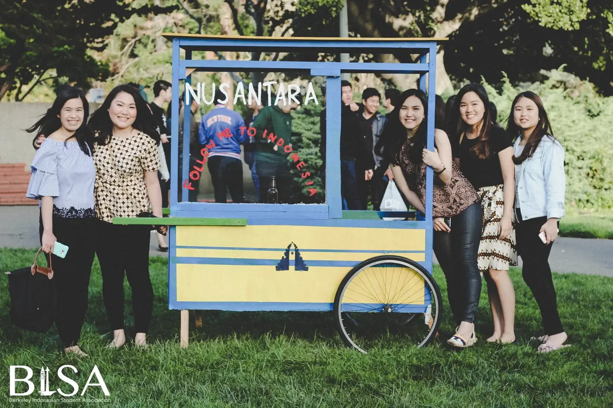
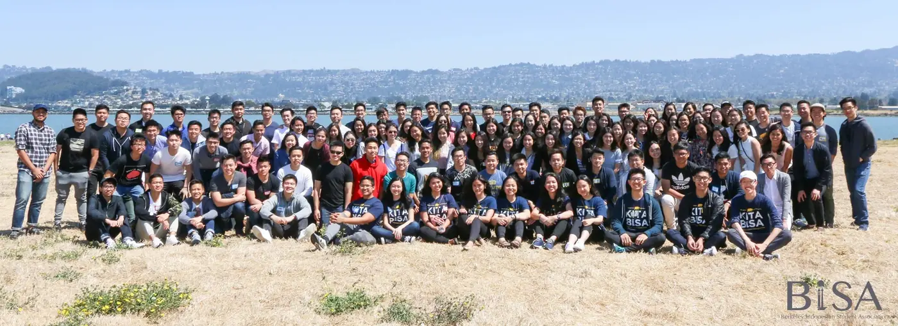

Berkeley Indonesian
Student Association
18,307 dots.
One for every island.
Kita bisa.
bisa /bi·sa/ verb Indonesian for “can.”
Also the Berkeley Indonesian Student Association. A home for Indonesians at Cal since 1985, created by the students, for the students.
Jakarta 6.21° S, 106.85° EBerkeley 37.87° N, 122.27° W
13,950km
Home is far. BISA is why it doesn’t feel that way.
Our mark, since 1985
Two towers.
One base.
The BISA mark joins Sather Tower with Monas, the National Monument in Jakarta. Both homes, standing on the same ground.
Meet BISATentang kamiAbout us
BISA is created by the students, for the students. Established in 1985, it has kept changing over four decades with one purpose: stronger friendships between Indonesian students at UC Berkeley.
Through continuously building a larger and closer community, we aim to support each other as the people we are now and the people we will soon become.
Everyone interested in Indonesia, our culture, events, and opportunities is always welcome. We have an open-door policy and there are no applications necessary to be a member.
Come say halo


-
Komunitas
Community
Foster lifelong relationships between Indonesians on campus.
Welcomings · Retreats · Potlucks · Poker nights
-
Karier
Career
Help our members develop professionally by providing work-related opportunities.
Career portal · Resume reviews · BISA x Sequoia Capital · Sri Mulyani @ Berkeley
-
Budaya
Culture
Promote and expose the rich Indonesian culture to Berkeley, the Bay Area, and beyond.
Nusantara · Merdeka Fest · Indonesian food fundraisers
- Founded at Cal
- 1985
- Visitors at Nusantara each year
- 5,000+
- Departments run by students
- 7
- Islands we call home
- 18,307
Acara utamaOur flagship event
A term originating from the Javanese island of Indonesia, Nusantara translates to “archipelago”, which describes our 18,307 islands.
Nusantara








- Largestannual Indonesian cultural event in the Bay Area
- 5,000+visitors come through every year
- Freefor all guests, including you
- All daytraditional food, performances, games, and more
Nusantara celebrates and promotes Indonesia’s rich and diverse culture to communities across the Bay Area, while giving Indonesians living away from home a place to reconnect to their roots.
AcaraOur past events
Every semester,
something to show up for.
PengurusBISA’s team
Run by students
who wear batik well.
Officers are selected through an election near the end of every Spring Semester by members of BISA. Candidates submit an application, interview, and deliver a speech on election night.


Seven departments
TokoMerch
School pride and Indo pride,
at the same time.
Tanya jawabFAQ
Curious what BISA is all about?
Want to be a part of our community or work with us on exciting events? Start here.

Ayo gabungCome join us
Ayo gabung.
There are no applications to be a member. Fill in the student intake form, hop in the Discord, and come to the next event. That’s it, you’re in.
Berkeley
00:00
Pacific Time
13,950 km
Call home sometime.
Jakarta
00:00
Western Indonesia Time